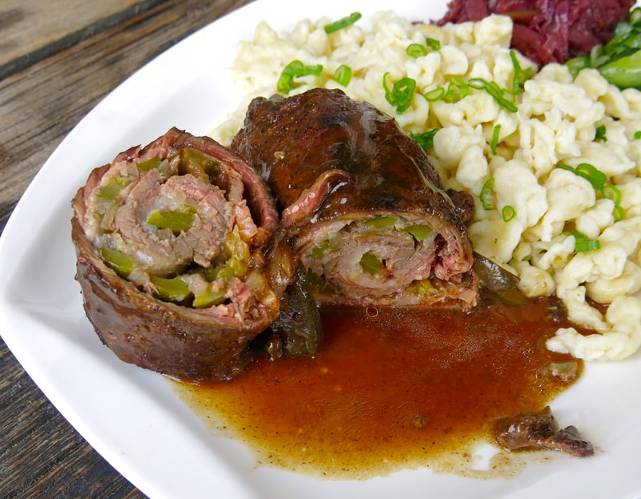

ROULADEN
Western Dish (Germany)

Takes 2 hours
Makes 4 servings
MAIN DISH
Ingredients
- 1⁄4 cup Dijon mustard
- 2 lbs top round steaks, sliced into 8 slices (1/4 inch thick)
- salt and pepper
- 8 slices bacon
- 1 large onion, cut into thin wedges
- 8 dill pickles, thinly sliced (optional)
- 3 tablespoons cooking oil
- 3 cups beef broth
- 1⁄3 cup flour
- 1⁄2 cup water
- chopped fresh parsley
Instruction
- 1. Spread mustard on one side of each slice of meat. Sprinkle with salt and pepper.
- 2. Place one strip of bacon, dill pickle slice (if using), and a few onion wedges on each slice of meat; roll up and secure with wooden toothpicks.
- 3. Put oil in dutch oven or other large pan and brown meat; drain.
- 4. Add broth and bring to a boil. Reduce heat and cover and simmer for 1-1/2 hours or until meat is tender. Remove meat and keep warm.
- 5. Combine flour and water until smooth and slowly stir into broth.
- 6. Bring to a boil, stirring constantly until thickened.
- 7. Remove wooden pics from meat and return to gravy; heat through.
- 8. Sprinkle with parsley if desired.
SOURCE : http://www.geniuskitchen.com
Add to Cart
want to try this recipe? order ingredients now!